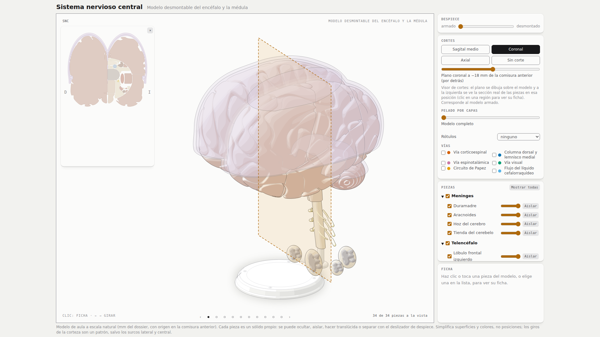

Sistema nervioso central
El encéfalo y la médula espinal en 34 piezas. Gira el modelo, desmóntalo pieza por pieza, pélalo por capas, córtalo en tres planos, ponle rótulos y recorre sus vías con flujo animado.
Abrir el modeloUna sola página de 5 MB; funciona en el navegador, sin instalar nada.

Qué puedes hacer
Todo en una sola página; no hay que instalar nada.
Girar
Diez vistas: ocho alrededor cada 45°, más la superior y la inferior. Con las flechas, arrastrando o con los puntos.
Desmontar
Un deslizador separa las treinta y cuatro piezas, una tras otra. Cada una se oculta, se aísla o se vuelve translúcida.
Pelar por capas
Trece pasos de afuera hacia adentro: de la duramadre al tronco del encéfalo, con el nombre de lo que se quita.
Cortar
Corte sagital medio, y un visor de cortes coronal y axial: el plano recorre el modelo y se ve la sección real.
Recorrer las vías
Corticoespinal, columna dorsal, espinotalámica, visual, circuito de Papez y flujo del líquido cefalorraquídeo.
Rotular y consultar
Rótulos con línea de guía y una ficha por pieza: qué es, con qué se conecta y una imagen libre con su autor y su licencia.
Los recursos
Además del modelo, está todo lo que se hizo para construirlo.
El modelo
La página interactiva completa, con todos sus controles.
Cómo se construyó
Un diario con más de veinte hitos y fotos de cada etapa: lo que funcionó, lo que no y por qué se tomó cada decisión.
Banco de imágenes
206 imágenes libres de referencia, de 13 grupos de piezas, con autor, licencia y enlace a su fuente.
Dossier anatómico
Unas 75 piezas con su forma, medidas, posición y conexiones, y las vías principales.
Viabilidad de los controles
El análisis técnico previo: qué se podía hacer con el kit y a qué costo.
Decisiones de diseño
Las reglas de modelado, las excepciones documentadas y lo aprendido en el camino.
Código y guía de uso
El repositorio completo, con el README: controles, cómo reconstruir y cómo verificar.
Es un modelo de aula, no un atlas. Las formas son esquemáticas: simplifican superficies y colores, no posiciones. Las vías son recorridos esquemáticos y los cortes se calculan sobre el modelo armado.
Imágenes y créditos. Las fichas usan imágenes libres (Wikimedia Commons: Gray's Anatomy 1918, BodyParts3D, fotografías de John A. Beal, Patrick J. Lynch, OpenStax y Blausen); cada una muestra su autor y su licencia. Construido con specimen y Claude Code.